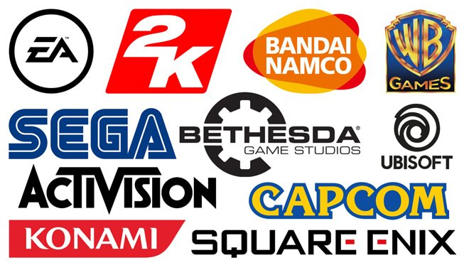

So I am a Junior this year. As scary as it seems I am going to be a senior next year. I am in the DCD major. That stands for "digital culture and design". Personally I would rather call it entertainment technology. That could just be my background influencing my opinion. Speaking of my background, I am a full blown nerd. No shame. I grew up playing video games. I watched my first anime at the age of 6. I even skipped school to finish "The lord of the rings" in an entire day. Let’s not forget a Pop figure collection of over 200 pops. I am very proud of that one. Anyway, I am a nerd looking for a cool nerd job. A video game designer to be specific. I grew up playing video games so why not make them. Many different video game titles have affected me in my life. I want to do the same for a new young player.

As stated earlier. I would like to be a video game designer. Large titles such as "The Witcher" "The Elder Scrolls" "Minecraft". I could go on and on. I want to be like Bethesda mastermind Todd Howard. Todd has made some of my favorite games. He spreads his creativity through video games. I love creating content. I've got a history of making content for fun but I think video games will be my favorite. I enjoy them so much because it is a combination of many different forms of media. Music, Art, Writing, Acting it all has its place in video games. It’s so much fun. That is about as simple as I can put it. Spearheading a project that can creatively express me and many others. That to me is something I can do for fun.
Click Here to view more on Todd Howard.
I have never give a lot of thought about my aesthetic before this class. I still don’t really know what to call my aesthetic. I do know what a lot of my inspirations are. When growing up I was a huge nerd pop culture kid. So a lot of Marvel, Star Wars, and Lord of the Rings, these are the movies that I grew up watching. With this in mind I love a good "cinematic" media. One other piece of inspiration is Anime. A lot of bright colors. These bright colors stem from anime in my opinion. I definitely think that anime is the inspiration for my use of bright colors. The combination of bright colors and grand cinematic framing is what I believe is the closes way to describe my aesthetic. Going forward with this background I am confident I am able to improve my skills and potentially broaden my style.